Baglung's population fell 3% last decade while its households grew. This section reads the 60-chart demographic suite — fertility, ageing, migration, households — and projects the future to 2036.
The story starts with a contradiction: fewer people but more households, an ageing population, and a deep female-skewed structure from out-migration.
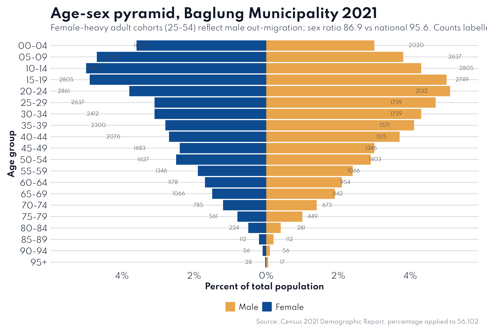
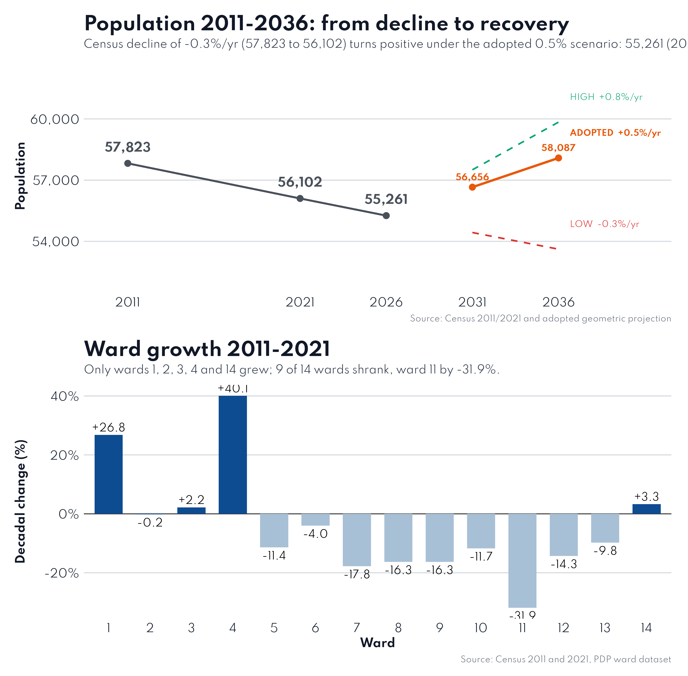
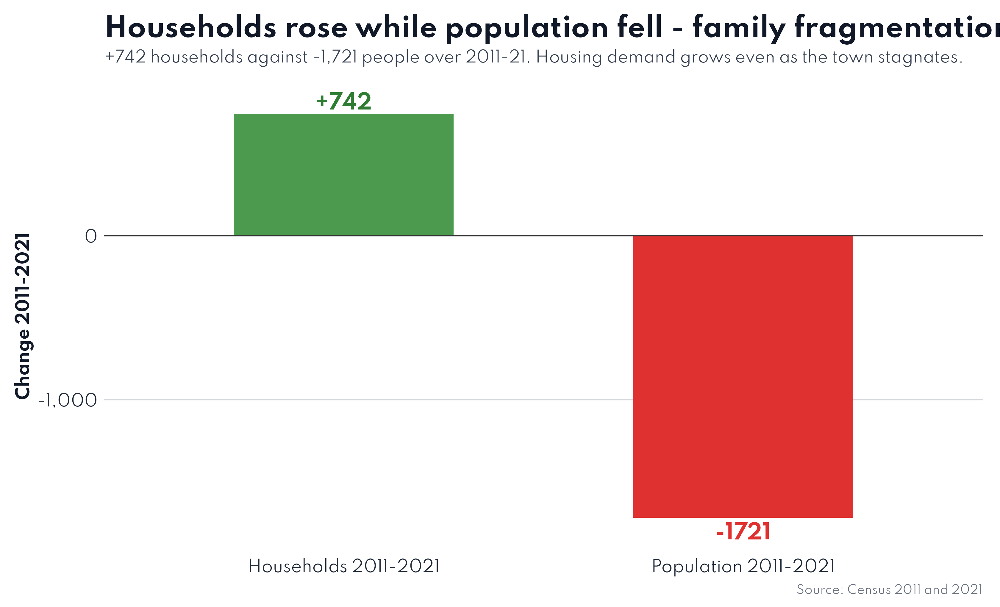
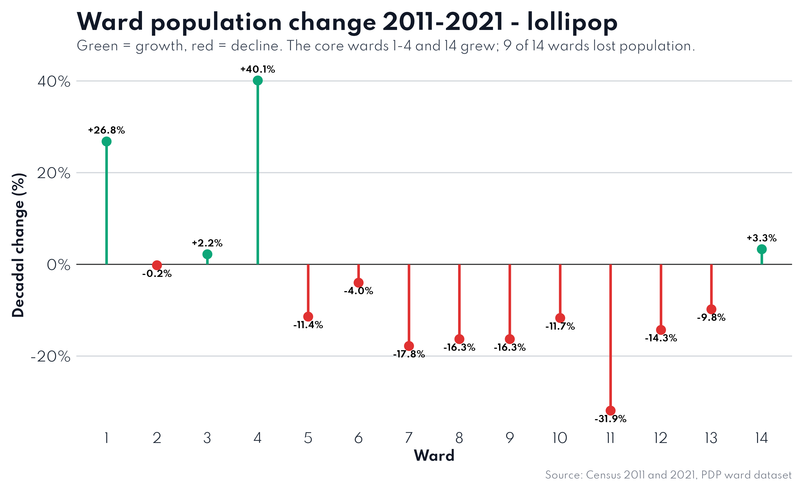
Chart 60 of the suite distils the entire demographic chapter into four driving forces. Everything the plan proposes responds to one or more of them.
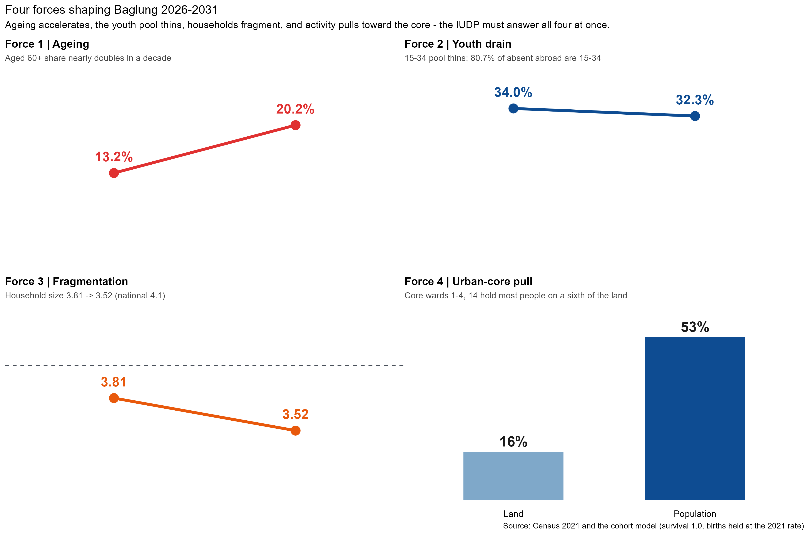
The 60+ share rises from 13.2% toward ~20% on the cohort model; old-age dependency roughly doubles to ~32 per 100 workers.
The 15–34 pool holds ~20,500 but keeps leaking — 80.7% of the absent abroad are youth. Retention is an active policy choice.
Household size falls 3.81→3.52 (national 4.1); housing demand keeps climbing against a flat population.
Core wards hold ~53% of people on ~16% of land — up to a 70:1 density spread that needs zoning.
A cohort-component model (survival 1.0, births held at the 2021 rate) isolates the pure age-structure effect. The forward numbers reveal what the plan must prepare for.
| Indicator | 2021 | 2031 (model) |
|---|---|---|
| Population | 56,090 | 63,496 (incl. births at 2021 rate) |
| Children 0–14 | 13,689 | 11,109 |
| Working 15–59 | 35,008 | 39,551 |
| Aged 60+ | 7,393 | 12,836 |
| Old-age dependency | 21.1 | 32.5 |
| Child dependency | 39.1 | 28.1 |
| School core 5–14 | 9,986 | 7,406 (−26%) |
| Households | 15,924 | 16,187 |
| Unregistered births | ~284/yr | ~2,800 over decade |
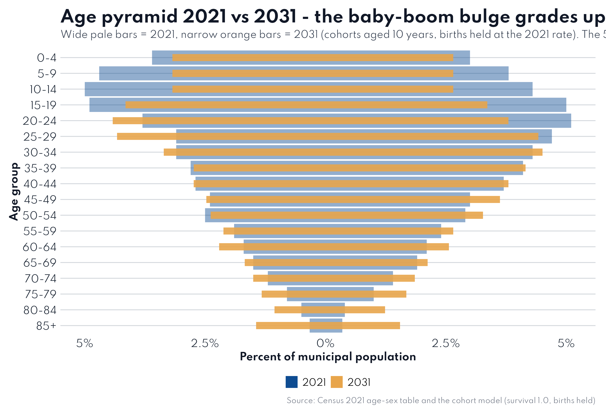
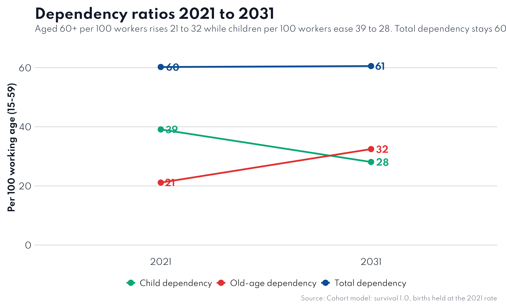
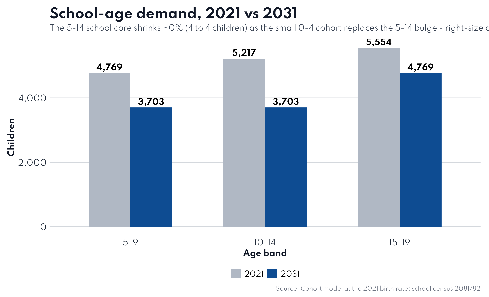
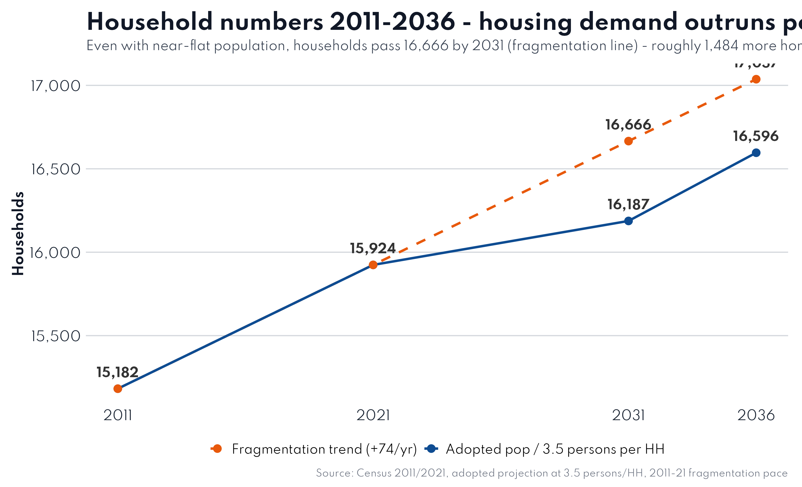
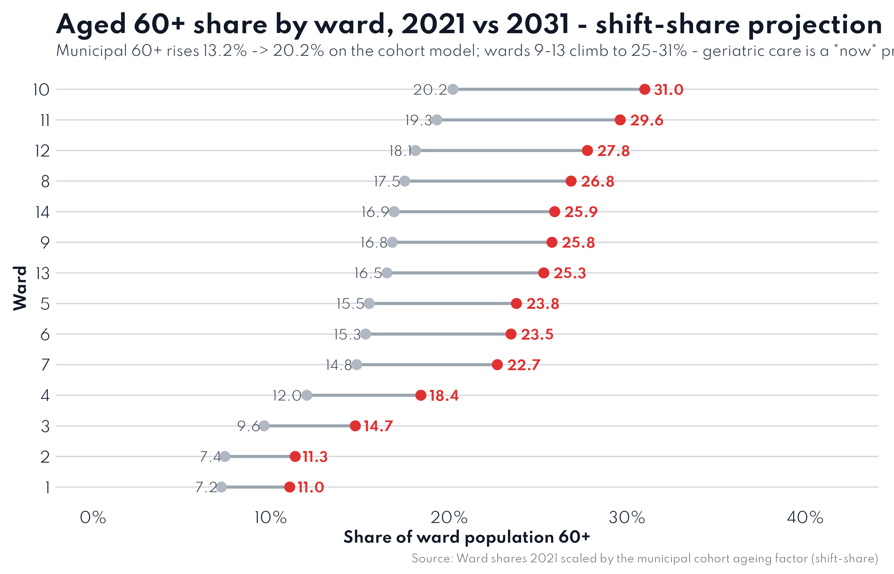
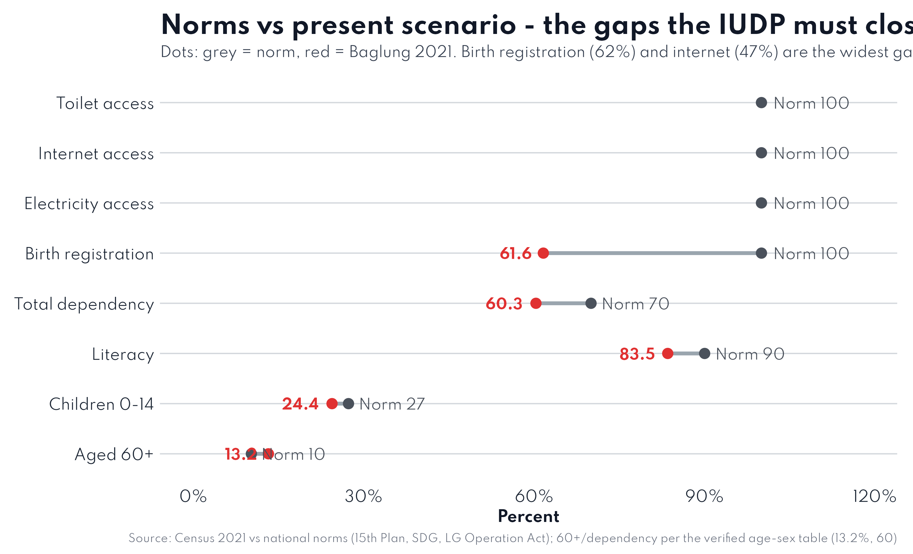